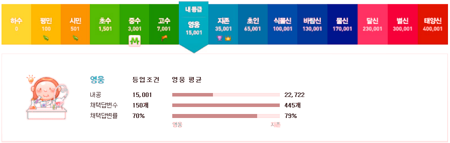

IT 생활 카테고리
-
오라클 클라우드 아키텍트 자격증을 따다
사실 생소한 자격증이었지만 어느날 기회가 왔었다. 한시적으로 오라클 클라우드 인프라스트럭처의 모든 자격증 시험을 공짜로 제공한다는 것이었다. 그래서 밑져야 본전이라고 Architect Associate 공부를 시작했는데 노력에 비해 다행히 합격하게 됐고 오늘은 오라클 클라우드와 자격증 얘기를 해볼까 한다.
-
달인의 추억
가끔 SBS 생활의 달인을 재밌게 보면서 뭔가 혹하는 내용이 나오면 실제로 가보고 싶을 때가 있다. 그 장소의 주소를 SBS 방송 게시판을 통해 찾아보게 되는데 이걸 지도에서 전체적으로 눈으로 보게 만들면 어떨까 하는 생각을 했었다. 그래서 시간을 내서 똑딱거려 웹페이지 하나를 만들어봤다. 이름하여 "달인의 추억"!
-
윈도 10 대기 화면의 멋진 장소들
윈도 10을 사용하면 대기 화면이 계속 멋진 사진으로 채워지는 것을 볼 수 있다. 궁금해서 구글신에게 물어봤다. 도대체 이 사진은 어딘가요?

-
티맥스 OS 유감
국내 최대 소프트웨어 회사 중 하나인 티맥스에서 자회사를 통해 윈도 호환 "티맥스 OS"를 발표했다. 직접 발표회장에는 가보지 못했지만 여론이 그렇게 호의적인 것은 아니며 앞으로의 결과물 완성도에 대해서도 의구심을 가질 수 밖에 없겠구나 하는 생각이 들었다. 거기다 나는 또 하나의 유감을 더하고자 한다.
-
광역철도 역별 시간표 기능 보완
현재 코레일(한국철도공사)의 광역철도 역별 시간표 웹페이지에 가보면 수도권 전철을 비롯한 다양한 철노 노선의 역별 시간표를 볼 수 있다. 그런데 이게 내가 볼 때는 기능이 불편하다. 오늘은 그래서 이 웹페이지를 좀 편하게 바꿀 방법을 만들어봤다.

-
클래시 오브 클랜 게임에서 즉시 완료를 효율적으로 하려면
몇 달간 클래시 오브 클랜에 꽤 빠져있다. 사실 이 게임을 많이 할 뿐 아니라 급기야 어제는 "현질"까지 해버렸다. 어제 실수로 500개나 되는 보석을 허무하게 써버리는 일이 발생했다. "장식품" 중 동상들이 뭔가 하고 보다가 어떤 것은 살 수 있는 상태길래 아무 생각 없이 눌러서 사버린 것이다. 그게 보석을 써버린 것임을 알고 나서 한동안 멍해졌다. 그 동안 게임에 돈을 들인 적 없이 열심히 보석 1000개를 모아서 "장인"을 살 꿈에 부풀어 있었는데 그걸 날리다니!! 결국 다시 만회하는 방법은 "현질"밖에 없다는 생각에 4.99달러를 결제하고 말았다.
-
지역별 아파트 실거래가 분석
얼마 전 내 집을 장만했는데 그 과정에서 국토교통부에서 주택 실거래가를 공개하고 있다는 것을 알게 되었다. 개발자로서 정부 3.0이라든지 공공 데이터 개방에 대해 관심이 많이 있었는데 이 주택 실거래 사이트는 데이터 개방, 활용 측면에서 도저히 봐줄 사이트가 안돼 보였다. 왜 데이터를 이렇게 찾기 어렵고 받아갈 수도 없게 만들었냐고!결국 내가 직접 의미 있는 아파트 실거래가 분석을 해보기로 하고 여기 일부를 공개한다. 이 과정에서 데이터를 뽑아 오기 위한 리버스 엔지니어링이라든가(이건 개방형 데이터가 아니잖소!) 다양한 오픈 소스 소프트웨어 사용, 시행착오, 시간 투자가 있었음을 밝힌다. 이 과정이나 좀더 다양한 분석 데이터는 앞으로 차츰 올려보기로 하겠다.
-
로봇이나 컴퓨터가 사람들의 일자리를 뺏을까?
어렸을 때 다들 그랬겠지만 나도 SF 소설을 꽤 읽었었다. 우주 여행, 시간 여행, 로봇, 인공 지능 등은 참 많이 등장하는 소재였다. 내가 어렸을 때는 2014년이라면 정말 엄청난 발전이 있었을 것 같은 미래였다. 그 미래가 도래한 지금 로봇이나 컴퓨터가 사람들의 일자리를 뺏을까?

-
구글 Analytics를 통해 본 브라우저 점유율
웹사이트 몇 곳의 4월달 구글 Analytics(방문 분석) 정보를 들여다보았다. 전체적으로 확실히 모바일이 강세라는 걸 느낄 수 있었으며 마이크로소프트의 인터넷 익스플로러는 최신 버전으로 빠르게 자리를 잡아가는 듯 하다. 방문자가 많은 사이트 두 곳에 대해서만 브라우저 점유율을 알아보기로 하겠다.

-
개발자에게 야근이란?
15년 정도 프로그램 개발 일을 하다 보니 참으로 많은 날을 야근하고 철야도 하고 주말 근무도 했다. 개발자에게 야근과 철야란 어떤 것인지 하나씩 꺼내어 생각해봤다. 힘들게 일한다고 살이 빠지진 않는다 1주일에 몇 번을 철야를 하고 주말에도 나가 힘들게 일했는데 흔히 살이 빠질 걸로 생각하지만 전혀 그렇지 않다. 야근의 부수적인 효과로 다이어트는 기대할 수 없는 것이다.
-
웹사이트가 방문자에 대해 알아낼 수 있는 것들
개인정보보호법도 발효되고 사생활 보호라는 주제가 여러 곳에서 화두가 되고 있지만 정작 개별 사용자들은 자신의 사적 데이터가 어떻게 노출될 수 있는지 잘 모르고 있을 것이다. 이 글에서는 웹 개발자라면 알 수 있는 여러 기법에 의해 웹사이트 방문자에 대해 알아낼 수 있는 정보가 어떤 것이 있는지 나열해보고자 한다.
-
개발 능력은 연차에 비례하지 않는다
[이 글은 내가 21일에 현대자동차에서 발표했던 세미나 내용 중 일부를 좀더 확장하여 작성해 본 것이다] 다른 나라도 그런지 모르겠지만 우리나라의 개발자로서 마음에 안드는 것 한 가지는 개발자 평가를 연차로 하는 방식이 일반적이라는 것이다. 개발자 개개인마다 경험과 능력이 다른데 연차로만 평가하다니 이게 무슨 초등학생 학년 올라가는 건가?
-
속담으로 풀어보는 프로젝트 관리
매번 프로젝트를 하다보면 새로운 도전과 문제의 연속을 겪게 되고 이 과정에서 종종 생각나는 속담들이 있다. 선조들의 지혜가 어떻게 프로젝트 관리에 적용되는지 생각해보았다. 배보다 배꼽이 더 크다 프로젝트의 과업 범위를 잘못 파악하고 있다보면 배보다 배꼽이 더 큰 경우가 생긴다. 원래는 작은 일이라고 생각했던 것이지만 기술적 난이도, 요구 사항, 소요 시간 등을 미리 파악하지 못해 결국 다른 모든 일보다 중요하고 큰 일이 돼 버리곤 한다.

-
네이버 지식인에서 영웅 등급 되다
네이버 지식인에서 3월 14일 첫 답변 이후 거의 5개월만에 영웅 등급에 이르렀다. 답변으로 등록한 개수가 총 206개인데 그 중 150개가 채택된 것이다. 댓글이나 삭제한 것까지 치면 더 많을 것이다. 내가 그 동안 거친 등급은 하수 - 평민 - 시민 - 초수 - 중수 - 고수 - 영웅 순서다.
 -
고객의 운영 데이터를 날려본 적이 있는가?
난 있다. 창피한 일이지만 10여년 전 어떤 골프장 웹사이트 개발로 바쁠 때 운영 데이터베이스 작업 중 테이블 하나를 날려버렸었다. 그땐 의욕이 앞서고 안정성에 대한 개념이 별로 없어서 개발용 데이터베이스를 따로 만들지 않고 운영 데이터베이스에 직접 붙어서 작업을 했다. 다행히 백업 테이블이 있고 고객이 수기로도 관리하던 사항이라 시간이 좀 들더라도 복구가 가능했지만 그런 대비책이 없었더라면 어떡했을까 지금도 생각해보면 아찔하다.

-
제안서 작업도 프로젝트다
정부 기관이나 공공 기관의 정보 시스템 관련 사업(프로젝트)을 수주하기 위해서는 아주 포멀한(formal) 제안서를 작성해야 한다. 사업을 수주하고 싶은 업체는 없는 살림에 인력을 쪼개 제안팀을 꾸리고 짧게는 며칠에서 길게는 몇 주 동안 제안 작업을 하게 되는데 프로젝트의 목표를 이해하고 업체 입장에서 최대한 돋보이는 내용으로 제안서를 작성한다.

-
문제는 비전이었다 - 텀블러
우리는 과거와 현재에서 배우는 것이 참 많다. 내 블로그 이름을 그래서 짓기도 했지만 우리는 이미 모든 것을 다 배워 알고 있다. 그러나 사실 그것은 과거에 알고 있었던 것이며 끊임 없이 다시 배워야지만 정말로 현재에 안다고 할 수 있다. 텀블러 인수 뉴스를 접한지 며칠 지난 오늘, 데이빗 카프(David Karp)가 어떻게 텀블러(Tumblr)를 키웠는지 한 블로그 글을 보게 됐다. 지금은 인스타페이퍼 창업자인 마코 아먼트(Marco Arment)는 과거 데이빗 카프의 유일한 직원으로 시작해 몇 년간 함께 했으며 사실상 텀블러는 오롯이 그만의 제품이라는 글을 올렸다.
-
못 살겠다 갈아보자 - Chrome에서 Firefox로 갈아타다
구글 크롬(Google Chrome)을 기본 브라우저로 사용한지 몇 년이 됐는데 최근 두어달 전부터 느려지는 문제가 발생했다. 처음 Chrome을 실행하면 괜찮다. 그런데 몇 시간 정도 사용하면? 정확히는 모르지만 어느 정도 사용하다 보면 클릭 응답이나 탭 전환이 몇 십초씩 걸릴 때도 있고 웹페이지 여는 것도 느려지곤 한다. 다시 실행해서 마지막 열었던 탭만 다시 열면 되는데 그 동작 하나 하는 게 번거롭다. 왜냐면 언제 느려지는지 명확하지 않아서 슬슬슬 느려지다 보면 내가 이미 바보같이 기다리는 데 익숙해지고 있는 거다. 그래서 나름 중요한 거 여느라 기다리는데 다시 열어서 봐야 한다는 생각을 자꾸 미루게 되고 점점 느려지니 점점 그 재실행이 번거롭다는 생각이 들고...
-
옵티머스G 단점
5월 1일 스마트폰을 장만했다. 번호 이동으로 2년 약정, 옵티머스G다. 그 전엔 회사용으로 삼성 바다 웨이브, 삼성 갤럭시탭 7을 썼었는데 개인 폰으로는 처음이다. 옵티머스G는 작년 10월에 출시되면서 이른바 회장님의 특명으로 개발한 "회장님 폰"이라는 것인데 웨이브나 갤럭시탭에 비해서는 월등히 장점이 많지만 기대했던 것보다 못한 점들이 몇 가지 보이고 있다. 온라인에 옵티머스G의 장점은 많이 찾을 수 있으므로 여기서는 단점을 정리해보려고 한다. 사용하면서 계속 나오는 대로 추가해보겠다.
-
기본
우리는 "기본"이라는 말을 참 많이 사용한다. 한자로 基本. 사전적인 의미는 "사물이나 현상, 이론, 시설 따위의 기초와 근본."이라고 한다. "이 제품은 적외선 촬영 기능이 기본이지." "영어의 기본은 단어 학습이야." "오늘은 기본 동작을 배웠다." "기본"은 이런 예처럼 형식상 준비가 되었음, 갖춤을 의미하는 객관적인 의미를 나타내기 위해 사용하는 경우도 많지만 "기본이 됐다", "기본이 안됐다"처럼 말하는 사람이 주관적으로 원하는 바에 대한 충족의 정도를 나타내는 의미로 사용하는 경우가 참 많다.
-
엔지니어 겸 관리자의 업무
구글 직원인 맷 웰시(Matt Welsh)가 블로그에서 밝힌 바에 따르면 본인은 크롬 프로젝트 중 일부인 모바일 웹 성능 영역의 팀을 이끌고 있는데 공식적인 직함은 소프트웨어 엔지니어고 비공식적으로는 "Tech Lead Manager"라고 한단다. 이 말은 팀의 기술적 방향성을 책임지는 사람이면서 동시에 사람들을 관리하는 일을 하는 사람이라 말을 조합해낸 것이다. 우리 말로 풀자면 "선임 엔지니어겸 중간 관리자(과장?)" 정도 될 것 같은데 이게 나의 관심을 끌었다. 개발자이면서 관리자인 나와 비슷한 업무가 많을 것 같기 때문이다. 그는 블로그에서 주요 업무를 다음과 같이 나열했다.
-
Scriptogr.am 사용기
이전 글에서 언급했지만 블로그를 여러가지 가입해보고 사용해봤는데 그중 Scriptogr.am이 상당히 마음에 들었다. 우리나라 블로그도 가입해봤고 해외 여러 블로그 사이트도 가입해봤지만 개발자인 나에게 프로그래밍이나 컴퓨터 관련된 글을 올리기 위한 블로그로서 Scriptogr.am은 다음과 같은 면에서 딱 내가 찾던 기능(features)을 가지고 있었다.
-
며칠간 Tumblr를 써보니
블로그 사이트를 여러 곳을 알아보면서 텀블러(Tumblr)를 가입했는데 처음엔 상당히 좋았다. 그리고 내 입맛에 맞게 준비하면서 며칠간 Tumblr를 써보니 다음과 같은 것들을 대응하거나 알아야 했다.